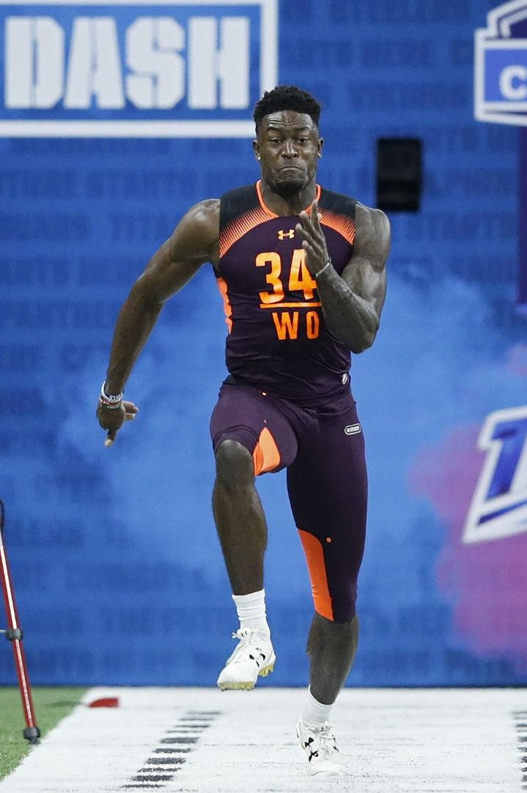
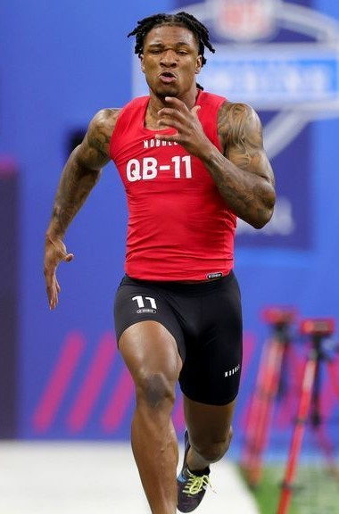

Check out this graph to see the correlation between combine results and draft position:


2022 Regular Season Skill Positions Top Performers and Their 40 Times (seconds):
Quarterback
Patrick Mahomes: 4.8
Josh Allen: 4.75
Tua Tagovailoa: DNP
Running backs
Josh Jacobs: 4.52-4.56
Derek Henry: 4.54
Christian McCaffrey: 4.49
Wide Receivers
Justin Jefferson: 4.43
Tyreek Hill: 4.29
Devonte Adams: 4.56
Tight Ends
Travis Kelce: 4.61
T.j. Hockenson: 4.7
Mark Andrews: 4.67
Teams take the combine very seriously as they evaluate the players they want to draft every year even though it doesnt guarantee any actual success. Because of this, players have taken traing for the combine very seriously in hopes to solidfy or raise their draft stock. Here's a short video about some of the training that goes into players combine preparation: